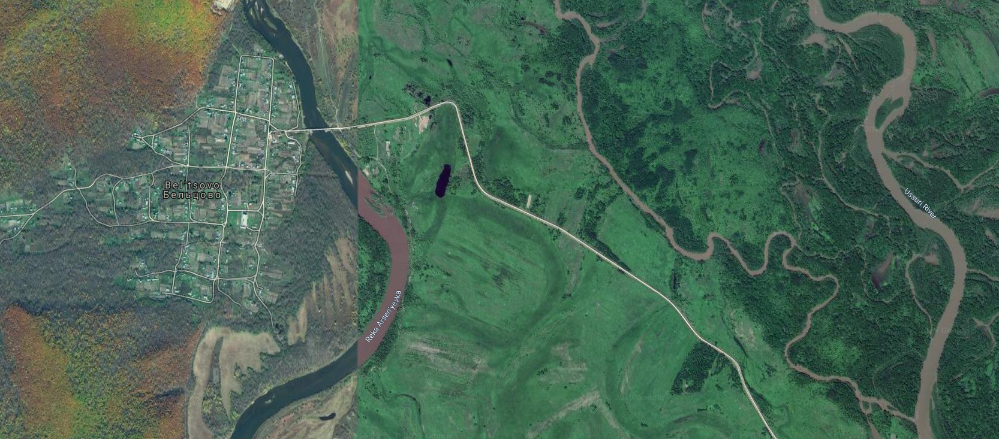
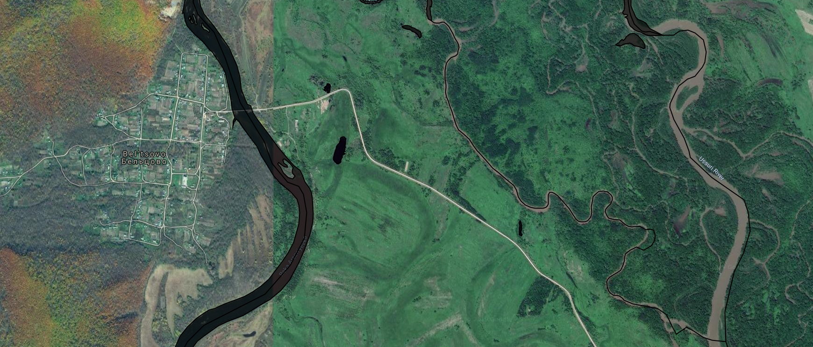
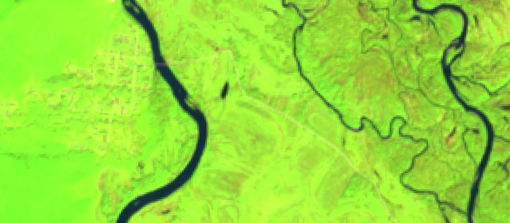
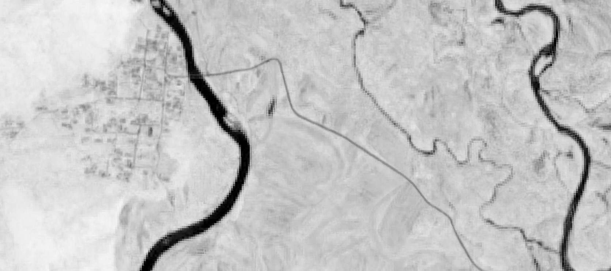
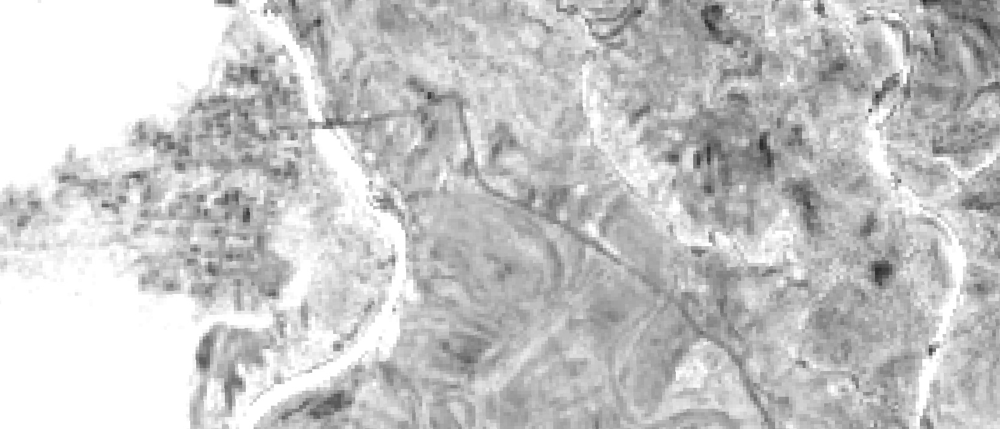
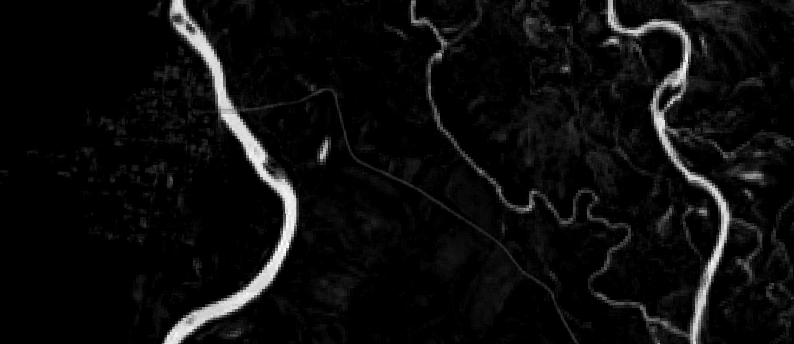

Задача
Есть большая задача -- построение маски водных объектов по данным ДЗЗ, точнее Sentinel-2. Эта задача разбивается на множество отдельных подзадач, в частности сейчас решаем вопрос о сборе обучающих данных для алгоритмов маскирования.
Для решения этой частной задачи нужно собрать данные Sentinel-2 на интересующую нас территорию и:
- удалить с них облака (возможно, и другие шумы);
- сделать временнУю аггрегацию по каждому каналу за определенный период времени (или несколько периодов);
- подключить дополнительные данные (например, по рельефу), если они нужны.
Основная задача -- максимально быстро получить первый вариант классификатора, чтобы затем, пользуясь его результатами начинать собирать обучающие данные и дополнять их.
Ход работ
1. Обучающие данные в первом приближении.
В первом приближении водные объекты можно взять в OSM. Они не полные, местами не совпадают с реальными положениями рек (особенно мелких) на снимках, но это очень хороший старт.
Таким образом были импортированы из ОСМ данные по:
- прибрежная зона;
- площадные объекты внутри суши (озера, крупные реки);
- линейные объекты.
2. Предобработка снимков
Предобработка укладывается в несколько строчек кода в Google EarthEngine. Фильтрацию облачности оставимна откуп каналу QA, который содержит бинарные маски облачности. Функция filterCloudSentinel2 анализирует этот канал и маскирует пиксель, если он был помечен облачным в QA. Далее происходит выбрка снимков по датам и географическому охвату.
Для выбранных снимков производится маскирование облачности и рассчет медианы. Это позволяет по-быстрому избавиться от случайшных флуктуаций в данных получить более устойчивое к шумам изображение. И, наконец, строятся три индекса NDVI, NDWI1 и NDWI2. Первый индекс классический, предназначенный для анализа растительности, а второй и третий -- для анализа воды в листьях и грунте. Думаю, что добавление таких индексов в анализируемый стек каналов может увеличить точность работы (но это не точно )) -- проверим на следующем этапе).
var waterPoly = ee.FeatureCollection("users/.../waterPolyPrim");
var filterCloudSentinel2 = function(img) {
/*
Bitmask for QA60
Bit 10: Opaque clouds
0: No opaque clouds
1: Opaque clouds present
Bit 11: Cirrus clouds
0: No cirrus clouds
1: Cirrus clouds present
*/
var quality = img.select('QA60').int();
var cloudBit = ee.Number(1024); // ee.Number(2).pow(10);
var cirrusBit = ee.Number(2048); // ee.Number(2).pow(11);
var cloudFree = quality.bitwiseAnd(cloudBit).eq(0);
var cirrusFree = quality.bitwiseAnd(cirrusBit).eq(0);
var clear = cloudFree.bitwiseAnd(cirrusFree);
return img.updateMask(clear);
};
var collection = ee.ImageCollection(useCollection);
collection = collection.filter(ee.Filter.date('2019-04-25', '2019-11-01'));
collection = collection.filterBounds(waterPoly);
var cloudFree = collection.map(filterCloudSentinel2);
var median = cloudFree.median()
.expression('b("B12","B11", "B8A","B4","B3","B2")')
.rename('swir2','swir1','nir','red','green','blue');
var NDWI1 = median.normalizedDifference(['nir', 'swir1']).multiply(10000).int16().rename('NDWI1');
var NDWI2 = median.normalizedDifference(['green', 'nir']).multiply(10000).int16().rename('NDWI2');
var NDVI = median.normalizedDifference(['nir', 'red']).multiply(10000).int16().rename('NDVI');
Что получается
Ниже представлен пример снимка высокого разрешения на данную территорию (можно посмотреть его в полном разрешении): 
На снимке хорошо видны реки, озера а также меандры в восточной части фрагмента.
На следующем снимке на него наложены данные по водным объектам, полученные из OSM. Видно, что не все водные объекты на снимке покрыты (особенно это относится к меандрам Уссури), есть ошибки в позиционировании небольших рек (возможно, русло поменялось?).

Далее представлены снимки Sentinel-2 и рассчитанные индексы:
| Снимок | |
|---|---|
| (swir1, nir, red) |  |
| NDVI |  |
| NDWI1 |  |
| NDWI2 |  |
Вода везде хорошо "вылезла" кроме NDWI1: видно, что в западной части фрагмента все пересвечено. Похоже, там очень влажные леса, которые дают такой эффект. Видно также, если посмотреть снимки в исходном рарзрешении, что Sentinel-2 может оказаться недостаточным, чтобы уверенно отбить мелкие реки и ручьи, хотя они и просматриваются на снимках. Но в целом видно, что вода должна неплохо отделяется от остальных объектво.
Что дальше
Следующий шаг -- сбор статистики и посроение первой версии классификатора. Далее будет видно по результатам.